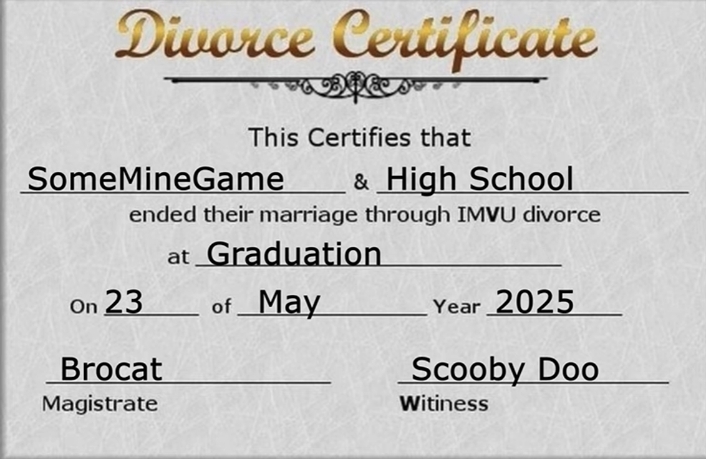

I don't know why my teacher accepted this, but it was ungraded and was an
example how hard it is to sell something and that not everyone is your consumer.
We were told we had over the course of lunch to come up with a script, and oh
boy did I deliver. I thought it was funny enough to make it into a video and he
thought it was better that way.
I uploaded it to YouTube on April Fool's.
Do Do Do by Silent Partner was of the soundtracks used.
This image was created for the video as a joke about me graduating high school.
SomeMineGame is my username, the date is my graduation date, and Brocat is one of my cats.
The specific use in the video was a failed marriage insult background.
